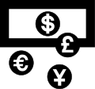

Currency
| Part of a series on |
| Numismatics the study of currency |
|---|
|  |
{kind=link}
A currency[a] is a standardization of money in any form, in use or circulation as a medium of exchange, for example banknotes and coins.[1][2] A more general definition is that a currency is a system of money in common use within a specific environment over time, especially for people in a nation state.[3] Under this definition, the British Pound sterling (£), euros (€), Japanese yen (¥), and U.S. dollars (US$) are examples of (government-issued) fiat currencies. Currencies may act as stores of value and be traded between nations in foreign exchange markets, which determine the relative values of the different currencies.[4] Currencies in this sense are either chosen by users or decreed by governments, and each type has limited boundaries of acceptance; i.e., legal tender laws may require a particular unit of account for payments to government agencies.
Other definitions of the term currency appear in the respective synonymous articles: banknote, coin, and money. This article uses the definition which focuses on the currency systems of countries.
One can classify currencies into three monetary systems: fiat money, commodity money, and representative money, depending on what guarantees a currency's value (the economy at large vs. the government's precious metal reserves). Some currencies function as legal tender in certain jurisdictions, or for specific purposes, such as payment to a government (taxes), or government agencies (fees, fines). Others simply get traded for their economic value.
The concept of a digital currency has arisen in recent years. Whether government-backed digital notes and coins (such as the digital renminbi in China, for example) will be successfully developed and implemented remains unknown.[5] Digital currencies that are not issued by a government monetary authority, such as cryptocurrencies like Bitcoin, are different because their value is market-dependent and has no safety net. Various countries have expressed concern about the opportunities that cryptocurrencies create for illegal activities such as scams, ransomware (extortion), money laundering and terrorism.[6] In 2014, the United States IRS advised that virtual currency is treated as property for federal income-tax purposes, and it provides examples of how long-standing tax principles applicable to transactions involving property apply to virtual currency.[7]
History
[edit]Early currency
[edit]This section needs additional citations for verification. (July 2024) |
{kind=link}
Originally, currency was a form of receipt, representing grain stored in temple granaries in Sumer in ancient Mesopotamia and in Ancient Egypt.
In this first stage of currency, metals were used as symbols to represent value stored in the form of commodities. This formed the basis of trade in the Fertile Crescent for over 1500 years. However, the collapse of the Near Eastern trading system pointed to a flaw: in an era where there was no place that was safe to store value, the value of a circulating medium could only be as sound as the forces that defended that store. A trade could only reach as far as the credibility of that military. By the late Bronze Age, however, a series of treaties had established safe passage for merchants around the Eastern Mediterranean, spreading from Minoan Crete and Mycenae in the northwest to Elam and Bahrain in the southeast. It is not known what was used as a currency for these exchanges, but it is thought that oxhide-shaped ingots of copper, produced in Cyprus, may have functioned as a currency.
It is thought that the increase in piracy and raiding associated with the Bronze Age collapse, possibly produced by the Peoples of the Sea, brought the trading system of oxhide ingots to an end. It was only the recovery of Phoenician trade in the 10th and 9th centuries BC that led to a return to prosperity, and the appearance of real coinage, possibly first in Anatolia with Croesus of Lydia and subsequently with the Greeks and Persians. In Africa, many forms of value store have been used, including beads, ingots, ivory, various forms of weapons, livestock, the manilla currency, shell money, and ochre and other earth oxides. The manilla rings of West Africa were one of the currencies used from the 15th century onwards to sell slaves. African currency is still notable for its variety, and in many places, various forms of barter still apply.
Coinage
[edit]This section needs additional citations for verification. (December 2017) |
The prevalence of metal coins possibly led to the metal itself being the store of value: first copper, then both silver and gold, and at one point also bronze. Today other non-precious metals are used for coins. Metals were mined, weighed, and stamped into coins. This was to assure the individual accepting the coin that he was getting a certain known weight of precious metal. Coins could be counterfeited, but the existence of standard coins also created a new unit of account, which helped lead to banking. Archimedes' principle provided the next link: coins could now be easily tested for their fine weight of the metal, and thus the value of a coin could be determined, even if it had been shaved, debased or otherwise tampered with (see Numismatics).
{kind=link}
Most major economies using coinage had several tiers of coins of different values, made of copper, silver, and gold. Gold coins were the most valuable and were used for large purchases, payment of the military, and backing of state activities. Units of account were often defined as the value of a particular type of gold coin. Silver coins were used for midsized transactions, and sometimes also defined a unit of account, while coins of copper or silver, or some mixture of them (see debasement), might be used for everyday transactions. This system had been used in ancient India since the time of the Mahajanapadas. The exact ratios between the values of the three metals varied greatly between different eras and places; for example, the opening of silver mines in the Harz mountains of central Europe made silver relatively less valuable, as did the flood of New World silver after the Spanish conquests. However, the rarity of gold consistently made it more valuable than silver, and likewise silver was consistently worth more than copper.
Paper money
[edit]This section needs additional citations for verification. (June 2024) |
In premodern China, the need for lending and for a medium of exchange that was less physically cumbersome than large numbers of copper coins led to the introduction of paper money, i.e. banknotes. Their introduction was a gradual process that lasted from the late Tang dynasty (618–907) into the Song dynasty (960–1279). It began as a means for merchants to exchange heavy coinage for receipts of deposit issued as promissory notes by wholesalers' shops. These notes were valid for temporary use in a small regional territory. In the 10th century, the Song dynasty government began to circulate these notes amongst the traders in its monopolized salt industry. The Song government granted several shops the right to issue banknotes, and in the early 12th century the government finally took over these shops to produce state-issued currency. Yet the banknotes issued were still only locally and temporarily valid: it was not until the mid 13th century that a standard and uniform government issue of paper money became an acceptable nationwide currency. The already widespread methods of woodblock printing and then Bi Sheng's movable type printing by the 11th century were the impetus for the mass production of paper money in premodern China.
{kind=link}
At around the same time in the medieval Islamic world, a vigorous monetary economy was created during the 7th–12th centuries on the basis of the expanding levels of circulation of a stable high-value currency (the dinar). Innovations introduced by Muslim economists, traders and merchants include the earliest uses of credit,[8] cheques, promissory notes,[9] savings accounts, transaction accounts, loaning, trusts, exchange rates, the transfer of credit and debt,[10] and banking institutions for loans and deposits.[10]
In Europe, paper currency was first introduced on a regular basis in Sweden in 1661 (although Washington Irving records an earlier emergency use of it, by the Spanish in a siege during the Conquest of Granada). As Sweden was rich in copper, many copper coins were in circulation, but its relatively low value necessitated extraordinarily big coins, often weighing several kilograms.
The advantages of paper currency were numerous: it reduced the need to transport gold and silver, which was risky; it facilitated loans of gold or silver at interest, since the underlying specie (money in the form of gold or silver coins rather than notes) never left the possession of the lender until someone else redeemed the note; and it allowed a division of currency into credit- and specie-backed forms. It enabled the sale of investment in joint-stock companies and the redemption of those shares in a paper.
But there were also disadvantages. First, since a note has no intrinsic value, there was nothing to stop issuing authorities from printing more notes than they had specie to back them with. Second, because this increased the money supply, it increased inflationary pressures, a fact observed by David Hume in the 18th century. Thus paper money would often lead to an inflationary bubble, which could collapse if people began demanding hard money, causing the demand for paper notes to fall to zero. The printing of paper money was also associated with wars, and financing of wars, and therefore regarded as part of maintaining a standing army. For these reasons, paper currency was held in suspicion and hostility in Europe and America. It was also addictive since the speculative profits of trade and capital creation were quite large. Major nations established mints to print money and mint coins, and branches of their treasury to collect taxes and hold gold and silver stock.
At that time, both silver and gold were considered a legal tender and accepted by governments for taxes. However, the instability in the exchange rate between the two grew over the course of the 19th century, with the increases both in the supply of these metals, particularly silver, and in trade. The parallel use of both metals is called bimetallism, and the attempt to create a bimetallic standard where both gold and silver backed currency remained in circulation occupied the efforts of inflationists. Governments at this point could use currency as an instrument of policy, printing paper currency such as the United States greenback, to pay for military expenditures. They could also set the terms at which they would redeem notes for specie, by limiting the amount of purchase, or the minimum amount that could be redeemed.
By 1900, most of the industrializing nations were on some form of gold standard, with paper notes and silver coins constituting the circulating medium. Private banks and governments across the world followed Gresham's law: keeping the gold and silver they received but paying out in notes. This did not happen all around the world at the same time, but occurred sporadically, generally in times of war or financial crisis, beginning in the early 20th century and continuing across the world until the late 20th century, when the regime of floating fiat currencies came into force. One of the last countries to break away from the gold standard was the United States in 1971, an action which was known as the Nixon shock. No country has an enforceable gold standard or silver standard currency system.
Banknote era
[edit]A banknote or a bill is a type of currency and it is commonly used as legal tender in many jurisdictions. Together with coins, banknotes make up the cash form of a currency. Banknotes were initially mostly paper, but Australia's Commonwealth Scientific and Industrial Research Organisation developed a polymer currency in the 1980s; it went into circulation on the nation's bicentenary in 1988.[11] Polymer banknotes had already been introduced in the Isle of Man in 1983. As of 2016,[update] polymer currency is used in over 20 countries (over 40 if counting commemorative issues),[12] and dramatically increases the life span of banknotes and reduces counterfeiting.
Modern currencies
[edit]{kind=link}
The currency used is based on the concept of lex monetae; that a sovereign state decides which currency it shall use. (See Fiat currency.)
Currency codes and currency symbols
[edit]In 1978 the International Organization for Standardization published a system of three-digit alphabetic codes (ISO 4217) to denote currencies. These codes are based on two initial letters allocated to a specific country and a final letter denoting a specific monetary unit of account.[13]
Many currencies use a currency symbol. These are not subject to international standards and are not unique: the dollar sign in particular has many uses.
Alternative currencies
[edit]Distinct from centrally controlled government-issued currencies, private decentralized trust-reduced networks support alternative currencies (such as Bitcoin and Ethereum's ether, which are classified as cryptocurrency since transference transactions are assured through cryptographic signatures validated by all users. With few exceptions, these currencies are not asset backed. The U.S. Commodity Futures Trading Commission has declared Bitcoin (and, by extension, similar products) to be a commodity under the Commodity Exchange Act.[14]
There are also branded currencies, for example 'obligation' based stores of value, such as quasi-regulated BarterCard, Loyalty Points (Credit Cards, Airlines) or Game-Credits (MMO games) that are based on reputation of commercial products.[15]
Historically, pseudo-currencies have also included company scrip, a form of wages that could only be exchanged in company stores owned by the employers. Modern token money, such as the tokens operated by local exchange trading systems (LETS), is a form of barter rather than being a true currency.
The currency may be Internet-based and digital, for instance, Bitcoin[16] is not tied to any specific country, or the IMF's SDR that is based on a basket of currencies (and assets held).
Possession and sale of alternative forms of currencies is often outlawed by governments in order to preserve the legitimacy of the constitutional currency for the benefit of all citizens. For example, Article I, section 8, clause 5 of the United States Constitution delegates to Congress the power to coin money and to regulate the value thereof. This power was delegated to Congress in order to establish and preserve a uniform standard of value and to insure a singular monetary system for all purchases and debts in the United States, public and private. Along with the power to coin money, the United States Congress has the concurrent power to restrain the circulation of money which is not issued under its own authority in order to protect and preserve the constitutional currency. It is a violation of federal law for individuals, or organizations to create private coin or currency systems to compete with the official coinage and currency of the United States.[17]
Control and production
[edit].jpg){kind=link}
| Rank | Currency | ISO 4217 code |
Symbol or abbreviation |
Proportion of daily volume | Change (2019–2022) | |
|---|---|---|---|---|---|---|
| April 2019 | April 2022 | |||||
| 1 | U.S. dollar | USD | US$ | 88.3% | 88.5% | |
| 2 | Euro | EUR | € | 32.3% | 30.5% | |
| 3 | Japanese yen | JPY | ¥ / 円 | 16.8% | 16.7% | |
| 4 | Sterling | GBP | £ | 12.8% | 12.9% | |
| 5 | Renminbi | CNY | ¥ / 元 | 4.3% | 7.0% | |
| 6 | Australian dollar | AUD | A$ | 6.8% | 6.4% | |
| 7 | Canadian dollar | CAD | C$ | 5.0% | 6.2% | |
| 8 | Swiss franc | CHF | CHF | 4.9% | 5.2% | |
| 9 | Hong Kong dollar | HKD | HK$ | 3.5% | 2.6% | |
| 10 | Singapore dollar | SGD | S$ | 1.8% | 2.4% | |
| 11 | Swedish krona | SEK | kr | 2.0% | 2.2% | |
| 12 | South Korean won | KRW | ₩ / 원 | 2.0% | 1.9% | |
| 13 | Norwegian krone | NOK | kr | 1.8% | 1.7% | |
| 14 | New Zealand dollar | NZD | NZ$ | 2.1% | 1.7% | |
| 15 | Indian rupee | INR | ₹ | 1.7% | 1.6% | |
| 16 | Mexican peso | MXN | MX$ | 1.7% | 1.5% | |
| 17 | New Taiwan dollar | TWD | NT$ | 0.9% | 1.1% | |
| 18 | South African rand | ZAR | R | 1.1% | 1.0% | |
| 19 | Brazilian real | BRL | R$ | 1.1% | 0.9% | |
| 20 | Danish krone | DKK | kr | 0.6% | 0.7% | |
| 21 | Polish złoty | PLN | zł | 0.6% | 0.7% | |
| 22 | Thai baht | THB | ฿ | 0.5% | 0.4% | |
| 23 | Israeli new shekel | ILS | ₪ | 0.3% | 0.4% | |
| 24 | Indonesian rupiah | IDR | Rp | 0.4% | 0.4% | |
| 25 | Czech koruna | CZK | Kč | 0.4% | 0.4% | |
| 26 | UAE dirham | AED | د.إ | 0.2% | 0.4% | |
| 27 | Turkish lira | TRY | ₺ | 1.1% | 0.4% | |
| 28 | Hungarian forint | HUF | Ft | 0.4% | 0.3% | |
| 29 | Chilean peso | CLP | CLP$ | 0.3% | 0.3% | |
| 30 | Saudi riyal | SAR | ﷼ | 0.2% | 0.2% | |
| 31 | Philippine peso | PHP | ₱ | 0.3% | 0.2% | |
| 32 | Malaysian ringgit | MYR | RM | 0.2% | 0.2% | |
| 33 | Colombian peso | COP | COL$ | 0.2% | 0.2% | |
| 34 | Russian ruble | RUB | ₽ | 1.1% | 0.2% | |
| 35 | Romanian leu | RON | L | 0.1% | 0.1% | |
| 36 | Peruvian sol | PEN | S/ | 0.1% | 0.1% | |
| 37 | Bahraini dinar | BHD | .د.ب | 0.0% | 0.0% | |
| 38 | Bulgarian lev | BGN | BGN | 0.0% | 0.0% | |
| 39 | Argentine peso | ARS | ARG$ | 0.1% | 0.0% | |
| … | Other | 1.8% | 2.3% | |||
| Total[b] | 200.0% | 200.0% | ||||
Commonly a central bank has the exclusive power to issue all forms of currency, including coins and banknotes (fiat money), and to restrain the circulation alternative currencies for its own area of circulation (a country or group of countries); it regulates the production of currency by banks (credit) through monetary policy.
An exchange rate is a price at which two currencies can be exchanged against each other. This is used for trade between the two currency zones. Exchange rates can be classified as either floating or fixed. In the former, day-to-day movements in exchange rates are determined by the market; in the latter, governments intervene in the market to buy or sell their currency to balance supply and demand at a static exchange rate.
In cases where a country has control of its own currency, that control is exercised either by a central bank or by a Ministry of Finance. The institution that has control of monetary policy is referred to as the monetary authority. Monetary authorities have varying degrees of autonomy from the governments that create them. A monetary authority is created and supported by its sponsoring government, so independence can be reduced by the legislative or executive authority that creates it.
Several countries can use the same name for their own separate currencies (for example, a dollar in Australia, Canada, and the United States). By contrast, several countries can also use the same currency (for example, the euro or the CFA franc), or one country can declare the currency of another country to be legal tender. For example, Panama and El Salvador have declared US currency to be legal tender, and from 1791 to 1857, Spanish dollars were legal tender in the United States. At various times countries have either re-stamped foreign coins or used currency boards, issuing one note of currency for each note of a foreign government held, as Ecuador currently does.
Each currency typically has a main currency unit (the dollar, for example, or the euro) and a fractional unit, often defined as 1⁄100 of the main unit: 100 cents = 1 dollar, 100 centimes = 1 franc, 100 pence = 1 pound, although units of 1⁄10 or 1⁄1000 occasionally also occur. Some currencies do not have any smaller units at all, such as the Icelandic króna and the Japanese yen.
Mauritania and Madagascar are the only remaining countries that have theoretical fractional units not based on the decimal system; instead, the Mauritanian ouguiya is in theory divided into 5 khoums, while the Malagasy ariary is theoretically divided into 5 iraimbilanja. In these countries, words like dollar or pound "were simply names for given weights of gold".[19] Due to inflation khoums and iraimbilanja have in practice fallen into disuse. (See non-decimal currencies for other historic currencies with non-decimal divisions.)
Currency convertibility
[edit]Subject to variation around the world, local currency can be converted to another currency or vice versa with or without central bank/government intervention. Such conversions take place in the foreign exchange market. Based on the above restrictions or free and readily conversion features, currencies are classified as:
- Fully convertible
- When there are no restrictions or limitations on the amount of currency that can be traded on the international market, and the government does not artificially impose a fixed value or minimum value on the currency in international trade. The US dollar is one of the main fully convertible currencies.
- Partially convertible
- Central banks control international investments flowing into and out of a country. While most domestic transactions are handled without any special requirements, there are significant restrictions on international investing, and special approval is often required in order to convert into other currencies. The Indian rupee and the renminbi are examples of partially convertible currencies.
- Nonconvertible
- A government neither participates in the international currency market nor allows the conversion of its currency by individuals or companies. These currencies are also known as blocked, e.g. the North Korean won and the Cuban peso.
According to the three aspects of trade in goods and services, capital flows and national policies, the supply-demand relationship of different currencies determines the exchange ratio between currencies.
Trade in goods and services
Through cost transfer, goods and services circulating in the country (such as hotels, tourism, catering, advertising, household services) will indirectly affect the trade cost of goods and services and the price of export trade. Therefore, services and goods involved in international trade are not the only reason affecting the exchange rate. The large number of international tourists and overseas students has resulted in the flow of services and goods at home and abroad. It also represents that the competitiveness of global goods and services directly affects the change of international exchange rates.
Capital flows
National currencies will be traded on international markets for investment purposes. Investment opportunities in each country attract other countries into investment programs, so that these foreign currencies become the reserves of the central banks of each country. The exchange rate mechanism, in which currencies are quoted continuously between countries, is based on foreign exchange markets in which currencies are invested by individuals and traded or speculated by central banks and investment institutions. In addition, changes in interest rates, capital market fluctuations and changes in investment opportunities will affect the global capital inflows and outflows of countries around the world, and exchange rates will fluctuate accordingly.
National policies
The country's foreign trade, monetary and fiscal policies affect the exchange rate fluctuations. Foreign trade includes policies such as tariffs and import standards for commodity exports. The impact of monetary policy on the total amount and yield of money directly determines the changes in the international exchange rate. Fiscal policies, such as transfer payments, taxation ratios, and other factors, dominate the profitability of capital and economic development, and the ratio of national debt issuance to deficit determines the repayment capacity and credit rating of the country. Such policies determine the mechanism of linking domestic and foreign currencies and therefore have a significant impact on the generation of exchange rates.
Currency convertibility is closely linked to economic development and finance. There are strict conditions for countries to achieve currency convertibility, which is a good way for countries to improve their economies. The currencies of some countries or regions in the world are freely convertible, such as the US dollar, Australian dollar and Japanese yen. The requirements for currency convertibility can be roughly divided into four parts:
- Sound microeconomic agency
With a freely convertible currency, domestic firms will have to compete fiercely with their foreign counterparts. The development of competition among them will affect the implementation effect of currency convertibility. In addition, microeconomics is a prerequisite for macroeconomic conditions.
- The macroeconomic situation and policies are stable
Since currency convertibility is the cross-border flow of goods and capital, it will have an impact on the macro economy. This requires that the national economy be in a normal and orderly state, that is, there is no serious inflation and economic overheating. In addition, the government should use macro policies to make mature adjustments to deal with the impact of currency exchange on the economy.
- A reasonable and open economy
The maintainability of international balance of payments is the main performance of reasonable economic structure. Currency convertibility not only causes difficulties in the sustainability of international balance of payments but also affects the government's direct control over international economic transactions. To eliminate the foreign exchange shortage, the government needs adequate international reserves.
- Appropriate exchange rate regime and level
The level of exchange rate is an important factor in maintaining exchange rate stability, both before and after currency convertibility. The exchange rate of freely convertible currency is too high or too low, which can easily trigger speculation and undermine the stability of macroeconomic and financial markets. Therefore, to maintain the level of exchange rate, a proper exchange rate regime is crucial.
Local currency
[edit]In economics, a local currency is a currency not backed by a national government and intended to trade only in a small area. Advocates such as Jane Jacobs argue that this enables an economically depressed region to pull itself up, by giving the people living there a medium of exchange that they can use to exchange services and locally produced goods (in a broader sense, this is the original purpose of all money). Opponents of this concept argue that local currency creates a barrier that can interfere with economies of scale and comparative advantage and that in some cases they can serve as a means of tax evasion.
Local currencies can also come into being when there is economic turmoil involving the national currency. An example of this is the Argentinian economic crisis of 2002 in which IOUs issued by local governments quickly took on some of the characteristics of local currencies.
One of the best examples of a local currency is the original LETS currency, founded on Vancouver Island in the early 1980s. In 1982, the Canadian Central Bank's lending rates ran up to 14% which drove chartered bank lending rates as high as 19%. The resulting currency and credit scarcity left island residents with few options other than to create a local currency.[21]
List of major world payment currencies
[edit]The following table are estimates of the 20 most frequently used currencies in world payments in July 2024 by SWIFT.[22]
| Rank | Currency | July 2024 |
|---|---|---|
| World | 100.00% | |
| 1 | 47.81% | |
| 2 | 22.47% | |
| 3 | 7.00% | |
| 4 | 4.74% | |
| 5 | 3.62% | |
| 6 | 2.42% | |
| 7 | 1.80% | |
| 8 | 1.63% | |
| 9 | 1.34% | |
| 10 | 0.92% | |
| 11 | 0.80% | |
| 12 | 0.70% | |
| 13 | 0.64% | |
| 14 | 0.40% | |
| 15 | 0.37% | |
| 16 | 0.37% | |
| 17 | 0.31% | |
| 18 | 0.29% | |
| 19 | 0.28% | |
| 20 | 0.23% |
See also
[edit]{kind=link}
Notes
[edit]- ^ From Middle English: curraunt, 'in circulation', from Latin: currens, -entis, literally 'running' or 'traversing'
- ^ The total sum is 200% because each currency trade is counted twice: once for the currency being bought and once for the one being sold. The percentages above represent the proportion of all trades involving a given currency, regardless of which side of the transaction it is on. For example, the US dollar is bought or sold in 88% of all currency trades, while the euro is bought or sold in 31% of all trades.
References
[edit]- ^ "Currency". The Free Dictionary.
currency [...] 1. Money in any form when in actual use as a medium of exchange, especially circulating paper money.
- ^ Bernstein, Peter (2008) [1965]. "4–5". A Primer on Money, Banking and Gold (3rd ed.). Hoboken, NJ: Wiley. ISBN 978-0-470-28758-3. OCLC 233484849.
- ^ "Currency". Investopedia.
- ^ "Guide to the Financial Markets" (PDF). The Economist. p. 14.
Determining the relative values of different currencies is the role of the foreign-exchange markets.
- ^ "Electronic finance: a new perspective and challenges" (PDF). Bank for International Settlements. November 2001. Archived (PDF) from the original on October 9, 2022. Retrieved May 11, 2020.
- ^ "Regulation of Cryptocurrency Around the World". Library of Congress. August 16, 2019. p. 1.
One of the most common actions identified across the surveyed jurisdictions is government-issued notices about the pitfalls of investing in the cryptocurrency markets. [...] Many of the warnings issued by various countries also note the opportunities that cryptocurrencies create for illegal activities, such as money laundering and terrorism.
- ^ "Frequently Asked Questions on Virtual Currency Transactions". December 31, 2019.
- ^ Banaji, Jairus (2007). "Islam, the Mediterranean and the Rise of Capitalism". Historical Materialism. 15 (1): 47–74. doi:10.1163/156920607X171591. ISSN 1465-4466. OCLC 440360743. Archived from the original on May 23, 2009. Retrieved August 28, 2010.
- ^ Lopez, Robert Sabatino; Raymond, Irving Woodworth; Constable, Olivia Remie (2001) [1955]. Medieval trade in the Mediterranean world: Illustrative documents. Records of Western civilization.; Records of civilization, sources and studies, no. 52. New York: Columbia University Press. ISBN 978-0-231-12357-0. OCLC 466877309. Archived from the original on March 9, 2012.
- ^ a b Labib, Subhi Y. (March 1969). "Capitalism in Medieval Islam". The Journal of Economic History. 29 (1): 79–86. doi:10.1017/S0022050700097837. ISSN 0022-0507. JSTOR 2115499. OCLC 478662641. S2CID 153962294.
- ^ "History of Banknotes". Reserve Bank of Australia. Retrieved December 9, 2019.
- ^ Wang, Ping (June 2016). "The Future Is Plastic – Currency Notes". Finance & Development. International Monetary Fund. Retrieved December 8, 2019.
- ^ "ISO 4217 - Currency Codes". International Organisation for Standardisation. 2015. Retrieved June 27, 2022.
The alphabetic code is based on another ISO standard, ISO 3166, which lists the codes for country names. The first two letters of the ISO 4217 three-letter code are the same as the code for the country name, and, where possible, the third letter corresponds to the first letter of the currency name.
- ^ "Bitcoin Basics" (PDF). Commodity Futures Trading Commission. Retrieved September 9, 2023.
- ^ "10 alternative currencies, from Bitcoin to BerkShares to sweat to laundry detergent". TED (conference). July 25, 2013. Archived from the original on July 25, 2013.
- ^ Hough, Jack (June 3, 2011). "The Currency That's Up 200,000 Percent". SmartMoney (The Wall Street Journal). Archived from the original on October 24, 2012. Retrieved December 14, 2012.
- ^ "Defendant Convicted of Minting His Own Currency". FBI. March 18, 2011.
- ^ Triennial Central Bank Survey Foreign exchange turnover in April 2022 (PDF) (Report). Bank for International Settlements. October 27, 2022. p. 12. Archived (PDF) from the original on October 27, 2022.
- ^ Turk, James; Rubino, John (2007) [2004]. The collapse of the dollar and how to profit from it: Make a fortune by investing in gold and other hard assets (Paperback ed.). New York: Doubleday. pp. 43 of 252. ISBN 978-0-385-51224-4. OCLC 192055959.
- ^ Linton, Michael; Bober, Jordan (November 7, 2012). "Opening Money". The Extraenvironmentalist (Interview). Interviewed by Seth Moser-Katz; Justin Ritchie. Retrieved December 29, 2016.
- ^ "Opening Money" (MP3). The Extraenvironmentalist (Podcast). Retrieved December 29, 2016.[20]
- ^ "RMB Tracker document centre". Swift.
External links
[edit]- currency (P38) (see uses)
 Media related to Currency at Wikimedia Commons
Media related to Currency at Wikimedia Commons Quotations related to Currency at Wikiquote
Quotations related to Currency at Wikiquote- Currency at Curlie
| Commodity money |
| |||||
|---|---|---|---|---|---|---|
| Money (Fiat/Token) | ||||||
| General |
| |||||